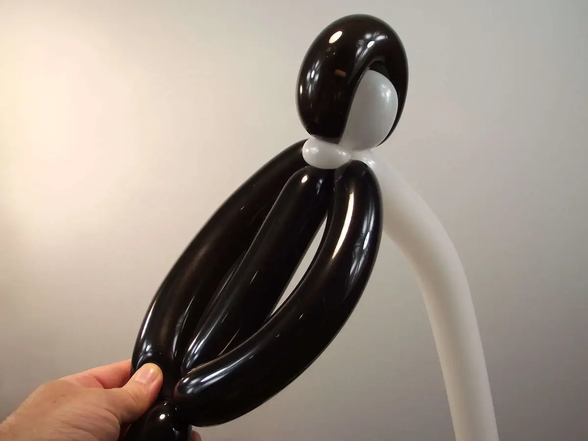

Contrairement aux apparences, cette sculpture sur ballon est assez simple à réaliser car, tout comme le tigre et la grenouille, elle n'utilise que des techniques qui ont déjà été présentées dans les deux premiers tutoriels de cette série d'initiation à la sculpture sur ballon : le toutou et le sabre. Cependant, le simple fait d'utiliser et de marier 3 ballons de 3 couleurs différentes donne à cette sculpture un aspect beaucoup plus technique et abouti.
Rappel : Pour vraiment progresser, il est impératif que vous maîtrisiez parfaitement toutes les techniques de base de la sculpture sur ballon. N'hésitez pas à consulter à nouveau toutes les techniques utilisées dans cette figurine :
1- Gonfler un ballon blanc en laissant au bout une marge d'un peu plus de la largeur d'une main. Puis faire le nœud.2- Faire de même avec un ballon noir et attacher les nœuds des deux ballons ensemble.3- Avec le ballon blanc, faire une première bulle ovale d'environ la largeur de 3 doigts.4- Faire une deuxième bulle identique à la suite de la première.5- Faire pivoter les bulles plusieurs fois ensemble sur elles-mêmes pour les bloquer. Nous avons déjà les deux yeux de notre pingouin !6- Enrouler le ballon noir le long du creux situé entre les deux bulles blanches. Former ainsi une large boucle noir et rapprocher sa base de la base des deux bulles blanches.7- Faire pivoter les bulles blanches et la boucle noire plusieurs fois ensemble sur elles-mêmes pour les bloquer. Nous venons de confectionner la tête de notre manchot/pingouin.8- Chasser l'air jusqu'au bout du segment restant de ballon noir (ne pas s'occuper du segment restant de ballon blanc pour le moment), vous devriez obtenir une figure similaire à celle ci.9- Faire un zigzag avec le reste de ballon noir de telle sorte que le dernier segment soit un peu plus long que les deux premiers. Noter mentalement l'emplacement de chacun de deux plis ainsi formés.10- Faire une première longue bulle au niveau du premier pli formé par le zigzag.11- Puis faire une deuxième longue bulle identique à la première, ce qui devrait être plus ou moins au niveau du deuxième pli qui avait été formé par le zigzag.12- Faire pivoter les deux grandes bulles noires plusieurs fois ensemble sur elles-mêmes pour les bloquer à la base de la tête de Tux.13- Vous devriez maintenant avoir une figure qui ressemble à celle-ci avec au centre, sous la tête, les deux ailes que nous venons de former (les deux grandes bulles noires).14- Avec le reste de ballon noir, former une bulle plus courte que les deux précédentes. Vous obtiendrez en même temps une dernière bulle que vous devrez incruster entres les deux ailes.15- Puis enrouler cette dernière bulle plusieurs fois entre les deux ailes afin de tout bloquer fermement. On distingue maintenant très bien la tête, les deux ailes, le dos et la queue de Tux.16- Reprendre le ballon blanc et former une petite bulle bien ronde à la base de la tête de Tux.17- Transformer cette bulle en 'pinch-twist' (bulle-oreille) qui nous servira a bloquer fermement la tête de Tux sur son dos et ses épaules (ou plutôt sur son dos et ses ailes).18- Notez que le reste du ballon blanc se trouve naturellement en dessous du pinch-twist.19- Il faudra le faire passer de l'autre coté, afin que nous puissions l'utiliser pour faire le ventre de Tux.20- Chasser un peu l'air du ballon blanc vers son extrémité et former une large bulle pour former le ventre qui devra être un peu rebondi.21- Puis finir de forcer l'air complètement au bout du ballon blanc de manière à ce qu'il n'y ait plus aucune marge de ballon vide.22- Faire une petite bulle à l'extrémité du ballon blanc.23- Puis incruster cette bulle blanche dans la jointure commune du bas des ailes, du bas du dos et de la queue. Peu importe de quel coté la bulle ressort pour le moment. Nous obtenons ainsi une grande boucle.24- Nous allons maintenant apprendre à diviser une grand boucle en deux plus petites boucles. Pour cela, plier la grande boucle blanche en deux parties égales et noter la marque du milieu.25- À ce niveau, appuyer pour former deux bulles puis tenir une des bulles fermement d'une main tout en faisant tourner l'autre bulle sur elle-même de l'autre main.26- Vous obtenez ainsi deux bulles bien distinctes. Voyons maintenant comment les transformer toutes les deux en boucles à leur tour.27- C'est très simple ! Il suffit d'approcher les deux plis formés aux extrémités des deux bulles l'un contre l'autre, pour former deux nouvelles (plus petites) boucles.28- Tenir une des boucles fermement d'une main tout en faisant pivoter l'autre bulle sur elle-même de l'autre main pour bien les bloquer.29- Enfin, positionner la petite bulle, que nous avions mise de côté, parfaitement entre les deux boucles. Nous venons de faire deux pattes palmées bien larges, sur lesquelles Tux pourra se tenir fermement.30- Nous avons presque fini. Il nous reste encore le bec ! Pour cela gonfler très peu un petit ballon rond, de préférence jaune.31- Appuyer sur l'extrémité du ballon et en agrippant le latex, le faire tourner et vriller un peu de manière à ce que tout l'air s'en échappe complètement et se comprime contre le nœud du ballon.32- Relâcher doucement le latex pour permettre à l'air de revenir graduellement dans le ballon qui devrait maintenant être allongé ou tout au moins ovale.33- Coincer le nœud du bec à la base de la tête. Il ne vous restera plus qu'à dessiner les yeux et à ne pas oublier de peaufiner et d'arrondir les formes des ailes, du dos et du ventre de Tux.31- Et voilà ! À bientôt ! Pour une autre leçon... avec Môssieur Ballon !